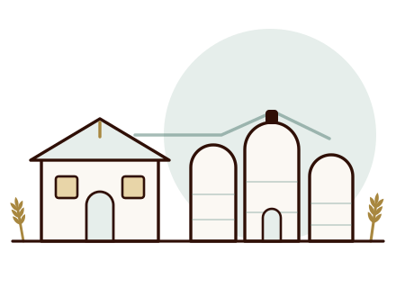
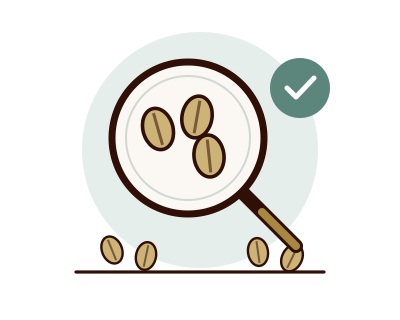

رسالتنا
أن نوفّر دقيقاً وأعلافاً بمعايير ثابتة وسعر عادل، وأن يجد العميل عندنا الوضوح نفسه في المنتج وفي التعامل.
شركة صناعية متخصّصة في طحن القمح وتصنيع الأعلاف، تعمل بقواعد واضحة ومكتوبة.
تأسّست شركة المروج الخضراء العريقة لصناعة الدقيق ومطاحن الأعلاف في مدينة قصر الأخيار لتكون مصدراً يعتمد عليه المخبز والمزرعة في آنٍ واحد. اخترنا أن نبني الشركة على قاعدة واحدة: أن تكون المعايير مكتوبة ومعلومة، وأن يكون التسليم في موعده.
نعمل على خطّين متوازيين — طحن القمح بأنواعه، وتصنيع الأعلاف المركّزة — ونخدم بهما المخابز والموزّعين ومربّي الدواجن والماشية.

أن نوفّر دقيقاً وأعلافاً بمعايير ثابتة وسعر عادل، وأن يجد العميل عندنا الوضوح نفسه في المنتج وفي التعامل.
أن نكون الخيار الأول لمن يبحث عن مورّد منتظم في الدقيق والأعلاف، يُذكر باسمه لا بسعره فقط.
لا نبيع ما لا نقبله لأنفسنا. المعايير لا تُخفَّض عند الضغط، والخطأ يُعالَج ولا يُبرَّر.

الجودة عندنا سلسلة نقاط فحص، تبدأ قبل دخول الحبوب وتنتهي بعد إغلاق الكيس.
بيانات مسجّلة تجدها هنا لتسهيل التعامل والتعاقد.
سواء كنت مخبزاً أو موزّعاً أو مربّياً، تواصل معنا ونشرح لك ما نستطيع تقديمه.